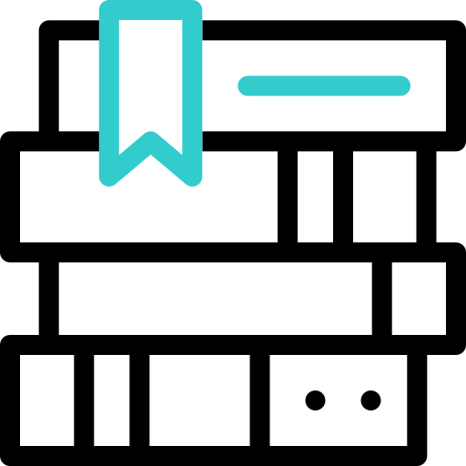

Bienvenido a mi Web
Selecciona una opción del menú para ver su contenido.
Misión, Visión y Valores
Misión
Brindar cursos especializados, asesoramiento y elaboración de textos de apoyo a profesionales de las áreas de Matemáticas e Informática tanto de Universidad como de Colegio, orientados al mejoramiento de su enseñanza y aprendizaje.
Visión
Ser un Centro de apoyo de referencia en la enseñanza de la Matemática y la Informática en nuestra comunidad, tanto para profesionales universitarios, profesores de colegio y estudiantes.
Valores
Nuestros valores son:
- Respeto
- Colaboración
- Compromiso
- Responsabilidad
- Confianza
- Trabajo en equipo
- Espíritu crítico
- Innovación
- Creatividad
Acerca de
Antecedentes
En enero de 1991 inició sus actividades el Programa de Mejoramiento de la Enseñanza de la Matemática e Informática (MEMI), con el objetivo de mejorar la educación en las áreas de Matemática e Informática de la Facultad de Ciencias y Tecnología en la Universidad Mayor de San Simón. El Proyecto cubrió tres áreas: Matemáticas a nivel universitario, Matemáticas a nivel ciclo medio e Informática a nivel universitario.
La segunda fase del Programa MEMI abarca el período 1994-1997, en la cual se destacan los primeros posgrados de San Simón, en áreas de Matemática e Informática.
Finalmente, la tercera fase abarca el período 1999-2003. Su tarea fundamental, en base al compromiso asumido con los cooperantes holandeses (NUFFIC y la Universidad de Utrecht), fue garantizar la sostenibilidad de las actividades de este Programa.
A partir del 2010, mediante Resolución Rectoral N° 389/10, el Programa MEMI adopta la denominación de Centro de Mejoramiento de la Enseñanza de la Matemática e Informática (Centro MEMI).
Autoridades
Contamos con docentes y técnicos especializados en informática y tecnología, comprometidos con la excelencia académica y la innovación educativa.
Ornigrama

Cursos y Seminarios
Explora nuestra oferta de formación en tecnología e informática.
Servicios
Ofrecemos consultorías, capacitaciones y desarrollo de software.
ICPC UMSS
Apoyamos a los estudiantes que participan en la competencia ICPC.
Contacto
Escríbenos a memi@fcyt.umss.edu.bo
Publicaciones
Consulta nuestras investigaciones y documentos técnicos.